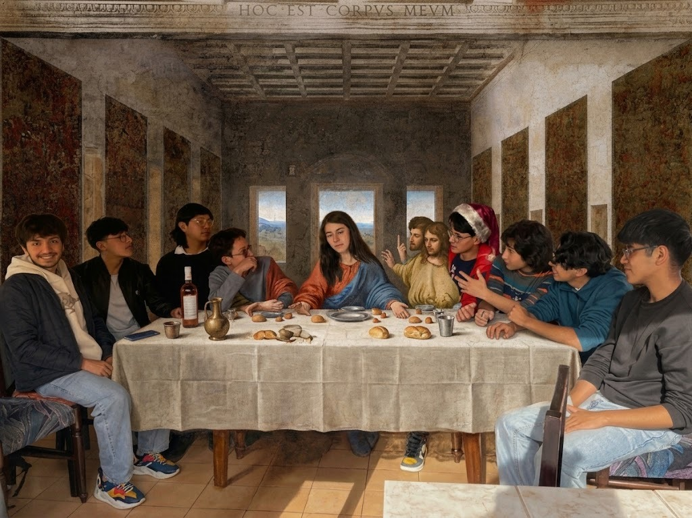
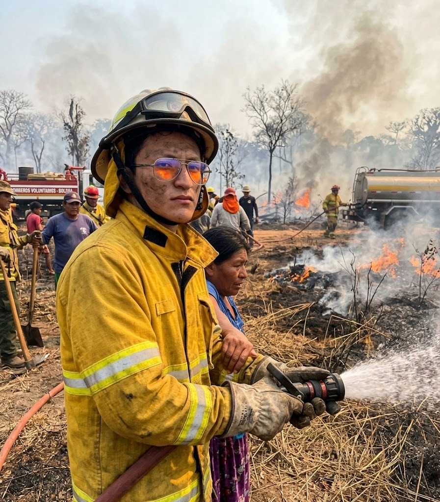

Gabo en Troya
Los griegos tenían el caballo; Gabo tenía el plan B. Cuando alguien preguntó "¿y si el regalo trae virus?", él ya estaba instalando el antivirus. Nadie lo escuchó. Troya cayó.

Candidato a Mister Informática · Leyenda local
99.1% PURO · Gabriel Omar Andia AlaveMister Informática está a la vuelta de la esquina y el Gabo todavía no tiene ni para el traje. Gabriel Omar Andia Alave, "el Gabo" para los cuates, estudia Informática en la UMSA y compila al primer intento (en su cabeza). Walter White cocinaba con 99.1% de pureza; el Gabo cocina código con el WiFi de la universidad, que es más difícil todavía. Sus programas no tienen bugs, tienen features paceños.
Dicen que un día le dijeron "di mi nombre" y respondió: "Gabo, pues". Hank lo siguió seis temporadas y nunca lo pudo atrapar, pero el micro de la Buenos Aires sí. Es orgulloso, bien orgulloso, y no pide favores. Por eso lo hago yo: para que llegue a Mister Informática con traje, con banda y con todo el curso detrás. Better call Gabo.
Un candidato con experiencia: lleva estando en todos lados desde antes de que existan los lados.
Los griegos tenían el caballo; Gabo tenía el plan B. Cuando alguien preguntó "¿y si el regalo trae virus?", él ya estaba instalando el antivirus. Nadie lo escuchó. Troya cayó.
Doce apóstoles y un invitado extra que llegó "ya mismo nomás". Se sentó al final de la mesa, pidió la cuenta separada y fue el único que sabía dividirla.

Los antiguos tiwanacotas lo dejaron tallado en piedra: "Vendrá uno que llamará, y nadie sabrá si es por tarea o por fiesta". Los arqueólogos confirman que era el Gabo.

Se encontró enterrado bajo capas de tierra un objeto misterioso: el WiFi estable. Gabo lo desenterró, lo miró y dijo "eso ya no existe, hermano".

Colón se llevó la fama, pero Gabo fue quien dijo "creo que por ahí hay algo". Quedó fuera de los libros por no tener tiempo de pasar en limpio el informe.

Gabo estuvo presente como testigo, con cara de "yo no sabía que esto era parte del trabajo". Desde entonces desconfía de todo lo que tenga cuatro patas y mal humor.

El Libertador necesitaba un segundo par de ojos para firmar la independencia. Gabo leyó el documento completo, aceptó los términos y condiciones, y nació Bolivia. De nada.

Gabo se alió con Perú porque "dos son mejores que uno, como en los grupos de trabajo". Lo único que no previó fue que, como siempre, alguien no iba a aportar.

Guerra del Chaco. Calor, sed, cero señal. Aun así, entregó el proyecto a tiempo. "Es que ya estaba acostumbrado", dice.

Cada diciembre desaparece sin explicación. Dicen que está en el Polo Norte compilando la lista de niños buenos. Mala noticia: él mismo salió en la lista de los traviesos.

Marchó, defendió y hasta hizo la presentación de diapositivas del reclamo. Con animaciones. Nadie le pidió animaciones, pero así es él.

Mientras todos compartían historias de "Pray for Amazonía", Gabo llegó con balde y buena actitud. Se sospecha que el fuego se apagó por vergüenza.

Mientras el mundo buscaba la vacuna, Gabo contribuyó con lo esencial: llevar el laboratorio a la hora que no había toque de queda. La ciencia se lo debe.
Sentado en la tribuna, cruzó los dedos con tanta fuerza que cambió el rumbo de las eliminatorias. Cualquier resultado, dice, fue por él. Si salió bien, mérito suyo; si no, culpa del árbitro.

Gabo solo se mide con los grandes. Fue una cabeceada limpia, de esas que quedan en la historia o en el parte médico. Messi no dijo nada, pero lo miró distinto desde entonces.

El traje no se paga solo y el Gabo no pide nada. Para apoyar su candidatura (traje, banda y un poco de dignidad), aporta a nuestro fondo.
¡CUALQUIER MONTO SERÁ APRECIADO!
Di mi nombre. Mejor aún, di el suyo.